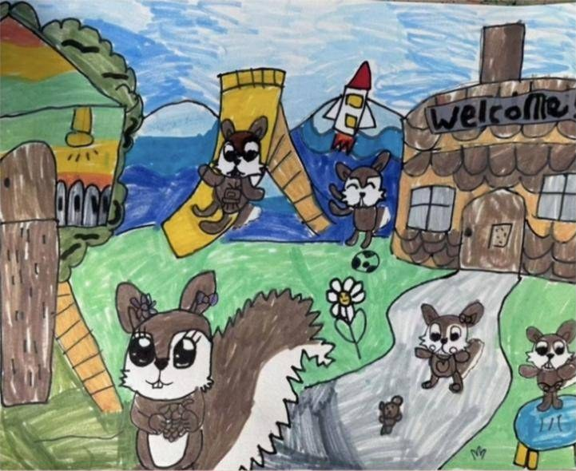
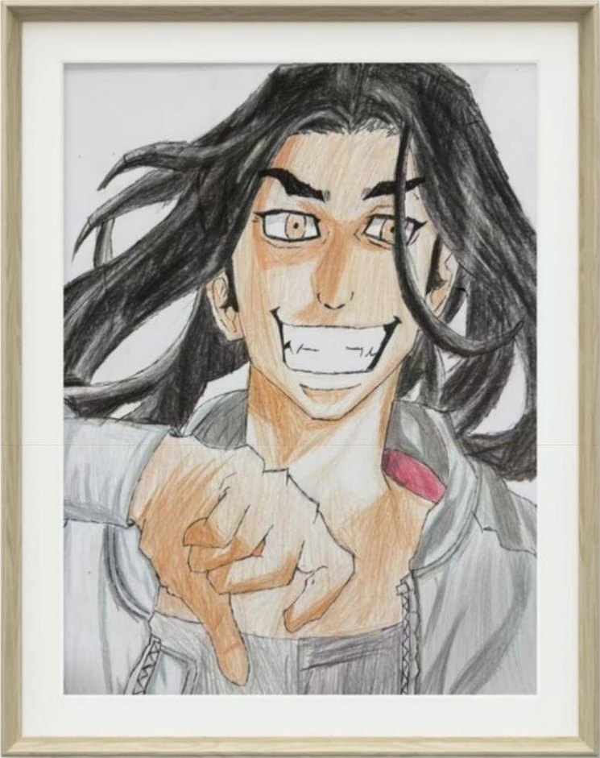

Room 01 · Ages 4–6
Little Artists小小艺术家
Foundations and creative thinking, made in watercolour, crayon and paint.儿童基本功与创意思维：水彩、蜡笔与颜料。


Art classes in Sydney悉尼美术课程
学会观察 · 勇于思考 · 独立创作

Art classes in Sydney for children and teenagers aged 4 to 18, taught by artist and educator Alina Yang.面向4至18岁儿童与青少年的悉尼美术课程，由艺术家、美术教育者 Alina Yang 亲自授课。
Every student starts with a line. What changes between four and eighteen is what they do with it.每个孩子都从一条线开始。四岁到十八岁，变化的是他们用这条线做什么。
Each stage adds one thing to the line: colour, then story, then observation, then independence.每个阶段都为这条线加上一层：先是色彩，再是故事，然后是观察，最后是独立。




Every artwork is a student's own. The youngest room is open now; the other three open as work arrives.每一幅作品都出自学生之手。最小的展厅已经开放，其余三个将随作品陆续上线。
Room 01 · Ages 4–6
Foundations and creative thinking, made in watercolour, crayon and paint.儿童基本功与创意思维：水彩、蜡笔与颜料。
Room 02 · Ages 6–8
Creative painting, acrylics, picture books and 3D work.创意画 · 丙烯 · 绘本 · 立体创作。
Room 03 · Ages 9–11
Drawing, acrylics, sketching, manga basics and themed projects.素描 · 丙烯 · 速写 · 动漫基础 · 主题创作。
Room 04 · Ages 12–18
Advanced drawing, acrylics and independent work.专业素描 · 丙烯 · 独立创作。

Alina Yang, founder, artist and art educator 创始人、艺术家、美术教育者
I believe every child has a unique artistic voice. For younger children, I focus on nurturing imagination, curiosity and creative confidence.我相信每个孩子都有独特的艺术语言。对于年幼的孩子，我注重呵护他们的想象力、好奇心和创作自信。
As students grow, I provide personalised guidance and structured art education, helping them develop strong technical skills while discovering their own artistic style.随着孩子成长，我会提供个性化指导和系统的美术教育，帮助他们打下扎实的绘画功底，同时找到属于自己的艺术风格。
Nurturing imagination. Building skills. Inspiring individuality.呵护想象，夯实基础，激发个性。
Guiding young creativity with expertise, nurturing growth through art.用专业守护童心，用艺术陪伴成长。
Develop visual observation, analytical thinking and spatial awareness, and an understanding of shape, structure, light and colour.培养观察力、分析思维、空间认知，理解造型、结构、光影与色彩原理。
Encourage imagination, curiosity, original ideas, exploration and creative problem-solving.保护想象力与好奇心，发展原创思维、探索精神与解决问题的能力。
Develop independent planning, artistic decision-making, personal expression and the ability to complete original artworks.培养自主构思、艺术决策、个人表达及独立完成原创作品的能力。
Four stages that grow with your child, from first lines and colours to HSC Visual Arts.四个阶段，伴随孩子成长：从最初的线条与色彩，到HSC视觉艺术。
Ten lessons a term. Year levels and ages are for reference only; each student's level is set by their ability and progress.每学期10次课。年级和年龄仅供参考，课程阶段将根据学员实际能力与学习进度安排。
Ask which class fits咨询适合的课程| Course课程 | School year学年 | Age年龄 | Skills技法 | Per lesson单节 | Per term学期 |
|---|---|---|---|---|---|
| Creative Foundations创意启蒙 | CC–Kindy | 4–6 | Line, shape, colour, basic composition线条、形状、色彩、基础构图 | $45 | $45010 lessons |
| Art Foundations系统绘画基础 | Year 1–6 | 7–11 | Proportion, structure, perspective, colour, light and shade比例、结构、透视、色彩、明暗 | $50 | $50010 lessons |
| Advanced Art进阶艺术 | Year 7–10 | 12–15 | Advanced drawing, light and colour, figure structure, mixed media进阶素描、光影色彩、人物结构、综合媒介 | $55 | $55010 lessons |
| HSC Visual Arts MentoringHSC视觉艺术辅导 | Year 11–12 | 16–18 | Professional techniques, media experiments, series of works专业技法、媒介实验、系列作品 | $65 | $65010 lessons |
Students enrolled continuously for two years receive 50% off one holiday art class. Once per student, for selected holiday classes.连续学习满两年的学员，可享受一次假期艺术课程50%学费优惠。每位学员限享一次，适用于指定假期课程。
Longer projects that students take from first idea to finished work, run over several weeks. They are teaching projects, and the finished piece is the exercise.从构思到完成，学生独立完成每一个创作项目，每个项目持续数周。这些是教学项目，完成的作品本身就是练习。
Exploring materials, techniques and creative expression. Each project runs over several weeks: plan, draw, revise, finish.探索不同媒材、艺术技法与创意表达。每个项目持续数周：构思、起草、修改、完成。
Original picture books, four-panel comics and character design. 原创绘本、四格漫画与角色设计。
Observing everyday life, drawing outdoors and on location. 观察生活、户外写生与现场创作。

One story, four frames, a beginning and a turn.
Characters, sequence and a story told page by page.
A character with a face, a posture and a personality.
Setting, light and space, built from observation.
Short, focused workshops in the school holidays.学校假期期间的专题工作坊。
From young artists to confident young leaders, through sharing their art and working together.从独立创作，到自信表达与合作成长。